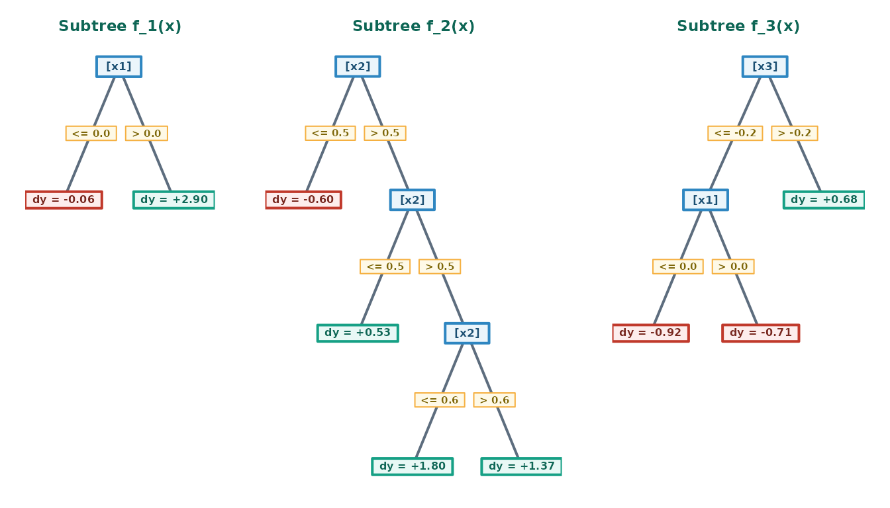

Introduction to FIGS
figsr implements Fast Interpretable Greedy-Tree Sums (FIGS) (Tan et al., PNAS 2023). FIGS fits a sum of shallow decision trees, \hat{f}(x) = \sum_k \hat{f}_k(x), one split at a time.
At every step the algorithm compares a single global pool of candidates: opening a new tree on the full sample, and splitting each leaf of every tree already grown. The candidate with the largest reduction in the residual sum of squares wins, and all residuals are recomputed against the whole sum before the next step. That is the whole idea: grow a new tree or deepen an existing one, whichever helps most.
The pay-off is that additive structure is modeled additively. A single CART tree has to repeat a subtree for every combination of two independent effects; FIGS puts each effect in its own small tree.
A regression fit
library(figsr)
set.seed(42)
df <- data.frame(x1 = rnorm(300), x2 = rnorm(300), x3 = rnorm(300))
df$y <- 3 * (df$x1 > 0) + 2 * (df$x2 > 0.5) - 1.5 * (df$x3 < -0.2) +
rnorm(300, sd = 0.3)
fit <- figs(y ~ x1 + x2 + x3, data = df, max_splits = 6)
fit
#> ========================================================
#> FIGS: Fast Interpretable Greedy-Tree Sums Model
#> ========================================================
#> Mode : regression
#> Total Trees : 3
#> Total Splits : 6 / 6 (max_splits)
#> Predictors : x1, x2, x3
#> Used in Splits : x1, x2, x3
#> Missing values : omit
#> ========================================================
#>
#> Use `summary(fit)` to display detailed decision rules.
#> Use `plot(fit)` to visualize decision tree structures.The three effects were generated independently, so we expect FIGS to recover them as separate trees rather than as one deep tree.
summary(fit)
#> ========================================================
#> FIGS Model Summary: Tree Sum Decision Rules
#> ========================================================
#>
#> --- Tree 1 ---
#> |-- IF x1 <= 0.005
#> | `-- Leaf Value: -0.0562
#> `-- IF x1 > 0.005
#> `-- Leaf Value: +2.8970
#>
#> --- Tree 2 ---
#> |-- IF x2 <= 0.485
#> | `-- Leaf Value: -0.6032
#> `-- IF x2 > 0.485
#> |-- IF x2 <= 0.543
#> | `-- Leaf Value: +0.5268
#> `-- IF x2 > 0.543
#> |-- IF x2 <= 0.607
#> | `-- Leaf Value: +1.8001
#> `-- IF x2 > 0.607
#> `-- Leaf Value: +1.3663
#>
#> --- Tree 3 ---
#> |-- IF x3 <= -0.193
#> | |-- IF x1 <= 0.045
#> | | `-- Leaf Value: -0.9203
#> | `-- IF x1 > 0.045
#> | `-- Leaf Value: -0.7062
#> `-- IF x3 > -0.193
#> `-- Leaf Value: +0.6819Each leaf holds that tree’s contribution to the prediction; a prediction is the sum of one leaf per tree.
Variable importance
figsr_importance() adds up, for each predictor, the
residual sum-of-squares reduction of every split it carries.
figsr_importance(fit)
#> # A tibble: 3 × 3
#> feature gain importance
#> <chr> <dbl> <dbl>
#> 1 x1 655. 60.5
#> 2 x2 260. 24.0
#> 3 x3 168. 15.5Visualizing the tree sum
plot() draws every tree in the sum. Three styles are
available: "scientific" (the default),
"modern" and "classic".
plot(fit)
Two-class classification
A factor outcome with two levels switches the model to classification. The engine still fits squared error, on the 0/1 encoding of the outcome, so the sum of the leaf values estimates the probability of the second level directly.
set.seed(7)
dfc <- data.frame(x1 = rnorm(300), x2 = rnorm(300))
score <- 1.5 * dfc$x1 + dfc$x2
dfc$y <- factor(ifelse(score + rnorm(300, sd = 0.5) > 0, "yes", "no"))
fit_c <- figs(y ~ x1 + x2, data = dfc, max_splits = 6)
head(predict(fit_c, new_data = dfc))
#> # A tibble: 6 × 1
#> .pred_class
#> <fct>
#> 1 yes
#> 2 no
#> 3 no
#> 4 no
#> 5 no
#> 6 no
head(predict(fit_c, new_data = dfc, type = "prob"))
#> # A tibble: 6 × 2
#> .pred_no .pred_yes
#> <dbl> <dbl>
#> 1 0.0278 0.972
#> 2 0.989 0.0115
#> 3 0.953 0.0465
#> 4 0.989 0.0115
#> 5 0.989 0.0115
#> 6 0.989 0.0115Missing values
By default figs() drops any row with a missing
predictor, as most model-frame based fitting functions in R do. With
many predictors that can discard a large share of a small data set.
Setting na_method = "mia" keeps every row instead: at each
candidate split the search also tries sending the missing values to
either side, and splitting on whether the value is missing at all, and
keeps whichever helps most. When missingness carries information, the
tree can say so in a rule.
set.seed(7)
n <- 200
dm <- data.frame(x = rnorm(n), z = rnorm(n))
dm$x[sample.int(n, 60)] <- NA
dm$y <- 4 * is.na(dm$x) + 2 * (dm$z > 0) + rnorm(n, sd = 0.3)
fit_mia <- figs(y ~ x + z, data = dm, max_splits = 3, na_method = "mia")
summary(fit_mia)
#> ========================================================
#> FIGS Model Summary: Tree Sum Decision Rules
#> ========================================================
#>
#> --- Tree 1 ---
#> |-- IF x IS MISSING
#> | `-- Leaf Value: +4.8534
#> `-- IF x IS NOT MISSING
#> `-- Leaf Value: +0.9956
#>
#> --- Tree 2 ---
#> |-- IF z <= -0.013
#> | `-- Leaf Value: -0.9614
#> `-- IF z > -0.013
#> |-- IF z <= 0.023
#> | `-- Leaf Value: +0.3955
#> `-- IF z > 0.023
#> `-- Leaf Value: +1.0549
figsr_importance(fit_mia)
#> # A tibble: 3 × 3
#> feature gain importance
#> <chr> <dbl> <dbl>
#> 1 missing(x) 625. 75.9
#> 2 z 198. 24.1
#> 3 x 0 0A split on missingness is listed as missing(x) in the
importance table, because it never reads the value of x. If
you would rather fill the gaps before fitting, use a
recipes imputation step such as
recipes::step_impute_knn() inside a workflow;
figsr does not impute.
vignette("missing-values", package = "figsr") works
through a real data set where missingness carries a real but modest
signal, and also shows how plot() colors leaves by the sign
of their contribution.
Use inside tidymodels
figs_tree() registers FIGS with parsnip, so
the model can be used anywhere a parsnip specification is
accepted, and max_splits, max_trees and
min_n can be tuned with dials and
tune.
library(parsnip)
spec <- figs_tree(max_splits = 6, min_n = 5) |>
set_engine("figsr") |>
set_mode("regression")
wf_fit <- fit(spec, y ~ x1 + x2 + x3, data = df)
head(predict(wf_fit, new_data = df))
#> # A tibble: 6 × 1
#> .pred
#> <dbl>
#> 1 1.59
#> 2 1.99
#> 3 2.98
#> 4 4.95
#> 5 1.59
#> 6 0.0224na_method is an engine argument, so it is set in
set_engine():
set_engine("figsr", na_method = "mia").
Bootstrap ensembling
bagging_figs() fits several FIGS models on bootstrap
resamples and averages them. It trades the readable rule set for
stability on noisy data.
bag <- bagging_figs(y ~ x1 + x2 + x3, data = df, n_estimators = 5, max_splits = 6)
head(predict(bag, new_data = df))
#> # A tibble: 6 × 1
#> .pred
#> <dbl>
#> 1 1.62
#> 2 2.08
#> 3 2.90
#> 4 4.93
#> 5 1.53
#> 6 0.0502Limitations
- Classification is limited to two classes.
- Case weights are not supported.
- Factor predictors with more than 10 levels present in a node are skipped, because the split search enumerates subsets of levels.
- Missing predictor values are handled by
na_method = "mia"; there are no surrogate splits, and a predictor that was complete in training cannot be missing at prediction time.